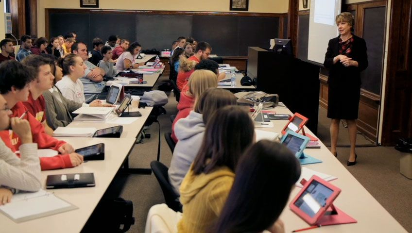
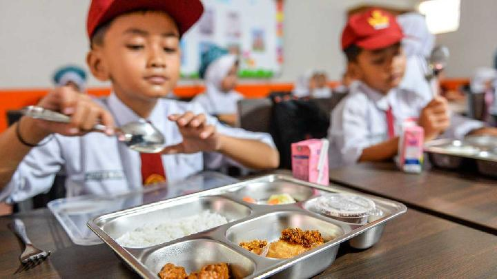
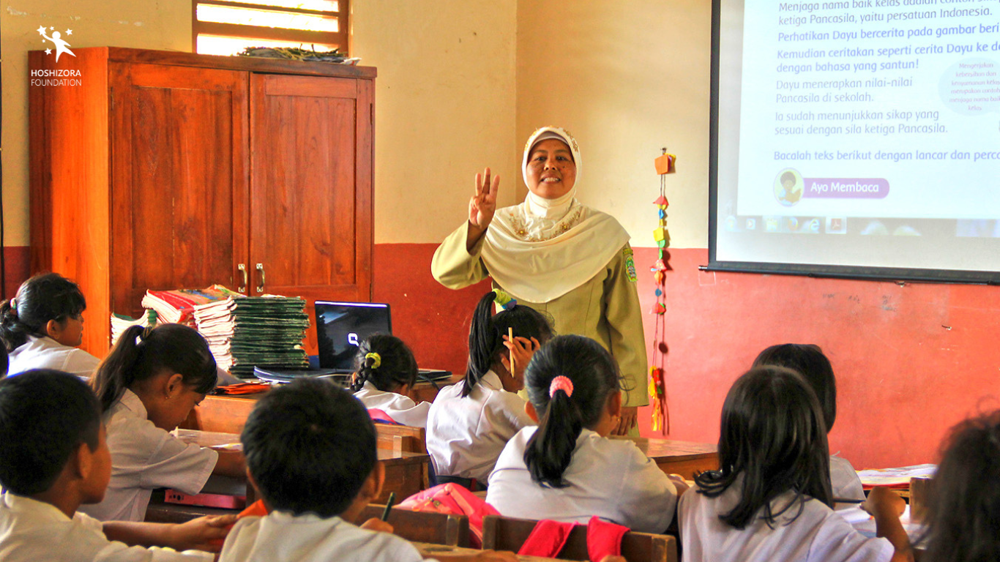
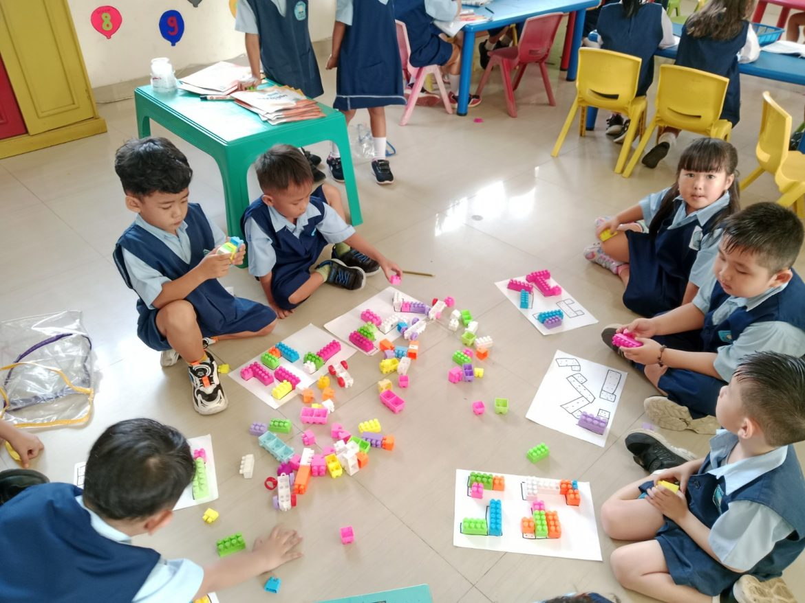

Potensi — Bidang yang Bisa Dipacu untuk Percepatan SDG 4

Digitalisasi pendidikan
Konektivitas sekolah meningkat sehingga potensi penggunaan platform pembelajaran digital makin besar, terutama untuk remedial dan pembelajaran adaptif.

Program gizi & sekolah (school feeding)
Program makan sekolah dapat meningkatkan kehadiran dan kapasitas belajar jika terintegrasi dengan kurikulum kesehatan.

Penguatan guru
Pelatihan in-service, mentoring, dan penilaian berbasis kompetensi dapat meningkatkan hasil belajar secara signifikan.

Pendidikan anak usia dini (PAUD)
Akses PAUD yang lebih merata terbukti meningkatkan kesiapan literasi dan numerasi dasar di SD.

Kemitraan publik–swasta & inovasi lokal
Dapur sentral, konten lokal untuk pengayaan kurikulum, dan model hybrid learning memperkuat ekosistem pendidikan.